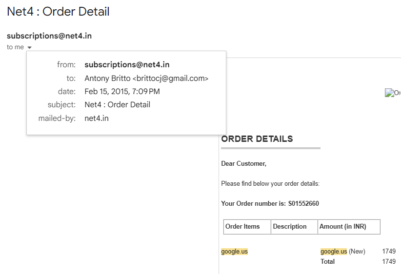

The Day I Legally Owned google.us for a Short Time
In 2015, while learning cybersecurity, I spent a lot of time studying how large organizations managed their internet infrastructure. Rather than focusing only on theory, I practiced reconnaissance on publicly available information such as domain registrations, DNS records, and hosting configurations.
During one of these exercises, I noticed something unexpected.
The google.us domain registration was due to expire on 15 February 2015. During my reconnaissance, I reviewed the publicly available WHOIS and DNS information and traced the administrative contact to a Google employee. Based on the employee's publicly available LinkedIn profile at the time, their primary professional background was in graphic design, and they were also responsible for managing the domain registration. I found this unexpected, as I had assumed such a critical asset would be managed by a dedicated domain administration or infrastructure team. The experience reinforced an important cybersecurity lesson: critical digital assets should have robust ownership, monitoring, and renewal processes, regardless of who is assigned the responsibility.
The moment the registration expired, I checked its availability.
To my surprise, the domain became available for registration.
I immediately registered google.us through Net4 India, and within minutes I became the legitimate registrant of the domain. I even received the order confirmation from the registrar.

At that point, my intention was never to misuse the domain or impersonate Google. My goal was simply to demonstrate how important proper domain lifecycle management is and to showcase my cybersecurity observation skills.
Interestingly, when I explored the domain further, I realized I couldn't practically use it for email because many email addresses under the domain had already been used by Google employees and systems. Using the domain could have created confusion, which was something I wanted to avoid entirely.
After achieving my learning objective, I chose not to retain the domain and allowed it to return to the registrar instead of attempting to profit from it.
In the years that followed, the domain registration industry placed increasing emphasis on automatic renewal, renewal reminders, domain lock features, and stronger lifecycle management to reduce the risk of accidental domain expiration. Today, auto-renewal has become a standard best practice for protecting valuable domain assets.
What I Learned
Looking back, the experience taught me several valuable lessons:
- Continuous monitoring can reveal overlooked security risks.
- Domain expiration management is a critical part of cybersecurity.
- Ethical security research is about responsible observation, not exploitation.
- Sometimes the most valuable outcome is the lesson itself, not ownership.
That brief moment of owning google.us remains one of the most memorable milestones in my cybersecurity journey. It reinforced my belief that curiosity, patience, and ethical responsibility are just as important as technical skills.
Note: This experience is shared for educational purposes. The domain was registered through the normal public registration process after it became available. It was never used to impersonate Google, send emails, host content, or conduct any malicious activity.